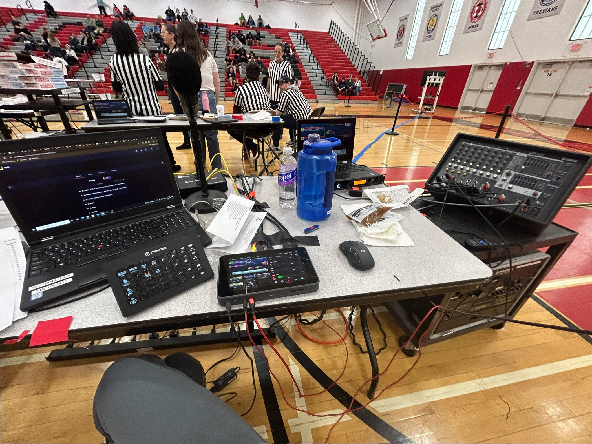
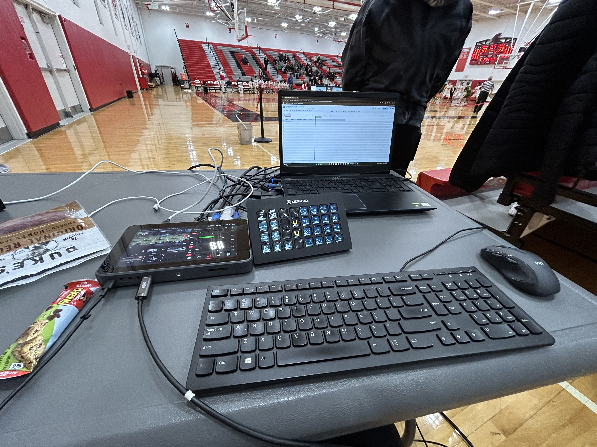

Problem
- Streamline livestreaming workflows to produce the best content possible
- Build reliable video recording and custom overlay configurations using OBS Studio
- Manage multi-camera stream setups efficiently
My experience as a DSI Club Lead Staff member who helped produce over 50 successful live broadcasts

My production setup for a typical livestream.

Behind the scenes of producing a typical basketball broadcast.